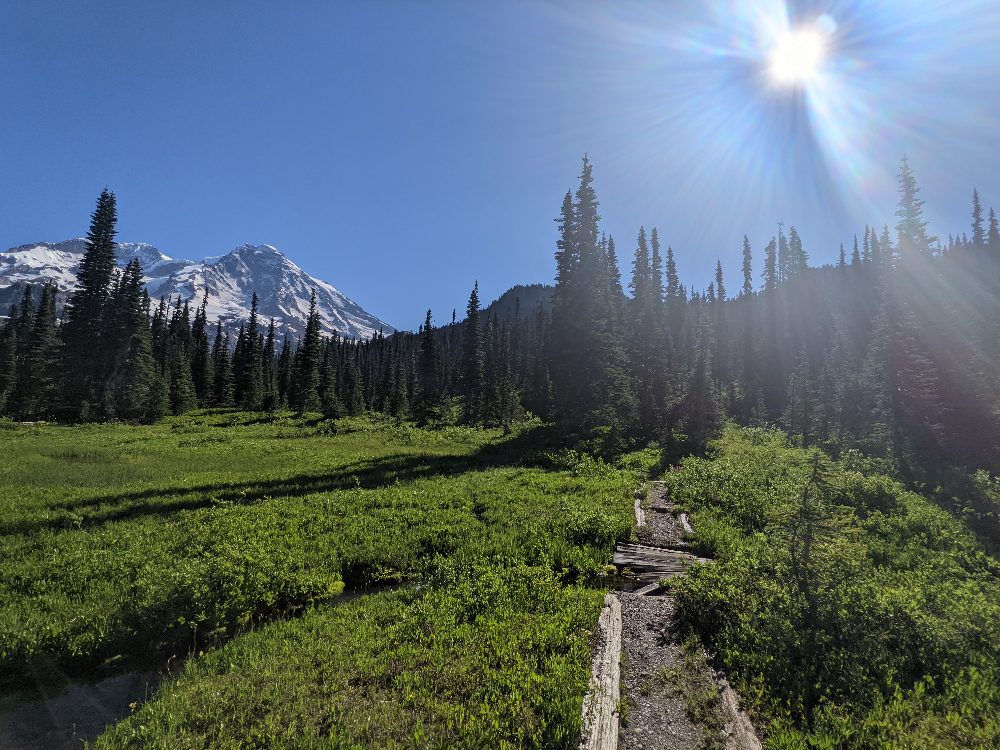

Raised trail
This is a trail with water underneath. Hikers don't like getting their boots and socks wet.
Rangers built turnpikes to raise up the level of the trail, and bridges to cross small creeks. This bridge is starting to fall down.